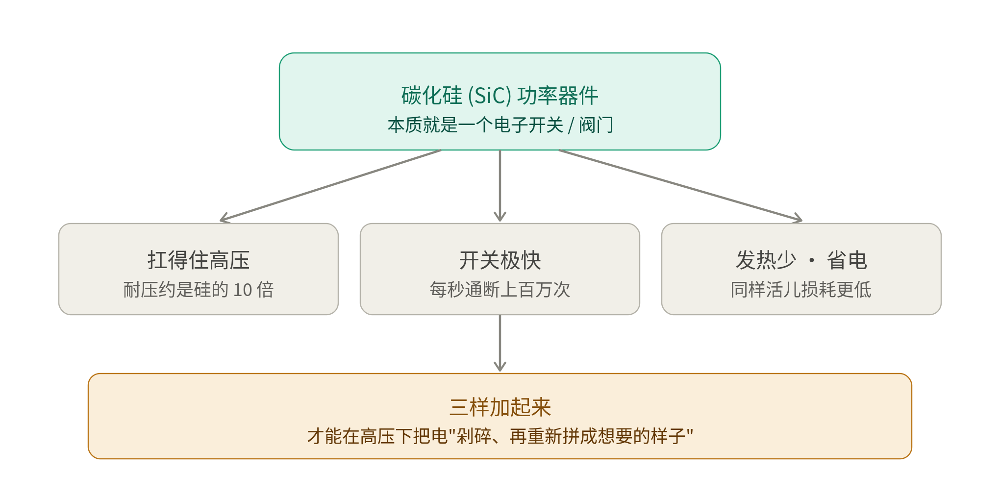
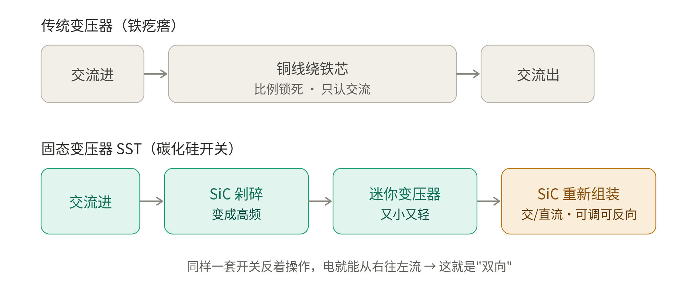
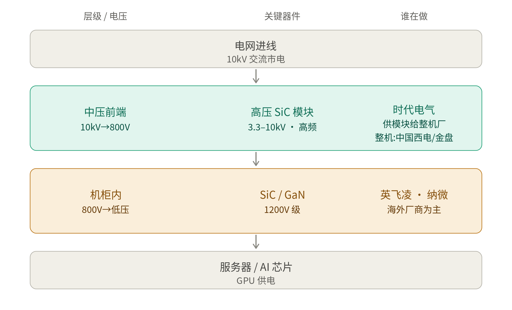
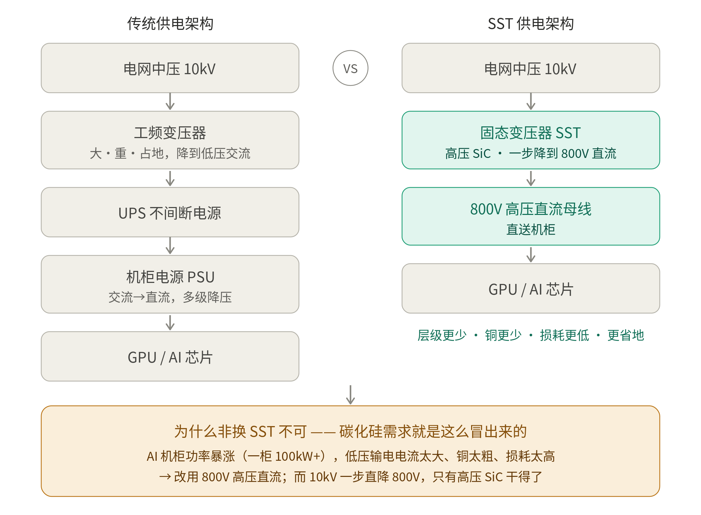
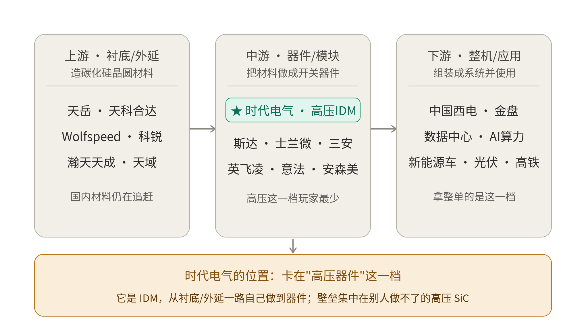

时代电气：一份研报引出的知识地图
从「碳化硅是什么」到「时代电气站在哪」的费曼式学习笔记
标的：时代电气 688187.SH / 03898.HK
整理于 2026 年 7 月 · 学习与讨论用途，不构成投资建议
导读
这份文档把一次围绕《时代电气研究报告》的完整讨论，系统沉淀成一份可以独立阅读的学习笔记。它的起点是一份研报，但落点是一整套「看懂这家公司到底在做什么」所需要的基础知识——从碳化硅这种材料是什么，到固态变压器为什么离不开它，再到 AI 数据中心为什么把这个冷门器件推上了风口，以及时代电气在整条产业链里究竟站在哪个位置。
全文不按聊天的先后顺序堆叠，而是重新梳理成六个部分：先读懂研报的核心逻辑，再补齐一堆缩写术语的底层概念，然后用「费曼技巧」把碳化硅器件、固态变压器原理、数据中心供电架构一层层讲透，最后回到产业链和公司格局，给时代电气一个清晰定位。讲解风格坚持先用大白话和比喻讲清「是什么、为什么」，再上数据和术语；适合对比的内容用表格呈现；引用到的具体数据和事实都标注了来源。
重要提醒：本文所有估值区间、情景推演均为情绪面测算，不是内在价值，更不构成任何买卖建议。投资有风险，决策需自行判断。
目录
导读 2
第一部分 报告解读：这份研报到底在讲什么 5
1.1 核心逻辑：一个「期权」结构 5
1.2 两条腿：压舱石与成长极 5
1.3 基本面数据（FY25） 5
1.4 SST 高压供电——上涨想象力所在 6
1.5 估值与炒作空间 6
1.6 风险与证伪条件 6
1.7 综合评价：值得肯定与要警惕 7
第二部分 基础概念扫盲：一堆缩写到底是什么 8
2.1 SST = 固态变压器（Solid-State Transformer） 8
2.2 IGBT = 绝缘栅双极型晶体管（Insulated Gate Bipolar Transistor） 8
2.3 SiC = 碳化硅（Silicon Carbide） 8
2.4 国内高压功率器件有哪些 8
2.5 kV 不是 kW：3.3–10kV 是什么意思 9
2.6 IDM = 垂直整合制造商（Integrated Device Manufacturer） 9
第三部分 读懂碳化硅器件 11
3.1 它本质是一个电子开关 11
3.2 为什么非碳化硅不可 11
第四部分 固态变压器原理（费曼版） 12
4.1 传统变压器为什么做不到双向、做不到直流 12
4.2 SST 怎么把电「剁碎再重组」 12
4.3 一句话解开「双向」与「直流」 13
第五部分 数据中心供电：从 10kV 到 800V 14
5.1 供电分层与各层器件 14
5.2 为什么 AI 数据中心非换 SST 不可 15
第六部分 产业链格局与公司地图 17
6.1 碳化硅产业链全景 17
6.2 中国西电 / 金盘：拿器件去做什么 18
6.3 英飞凌（Infineon）是什么公司 18
6.4 纳微（Navitas）是什么公司 · 与英伟达的 800V 合作 19
6.5 三家对比：时代电气 vs 英飞凌 vs 纳微 19
6.6 时代电气的最终定位 20
附 数据来源与说明 21
第一部分 报告解读：这份研报到底在讲什么
这份研报的风格很鲜明——不是常规投研，而是一份带强烈观点的「期权式」逻辑框架。它讲的不是「这只股票值多少钱」，而是「这只股票的下行有什么托底、上行有什么想象」。1
1.1 核心逻辑：一个「期权」结构
报告把这只股票包装成一个期权结构：下行有托底（真业绩＋合理估值＋分红），上行有想象（AI 数据中心高压供电这个主题）。一句话就是「下跌有底、上涨靠故事往上炒」。这是全篇的骨架，后面所有内容都挂在这根骨架上。
1.2 两条腿：压舱石与成长极
压舱石——轨道交通（高铁电气）。牵引变流、信号系统国内市占连年第一。逻辑是老旧机车淘汰、「五级修」大修高峰（2025 年起 2–3 年）、以及出海 CR450，提供稳定现金流。这块是「托底」的来源。
成长极——高压 IGBT / SiC。国内高压功率半导体龙头，自建产能走 IDM 模式。2025 年前三季 IGBT 收入 34.68 亿元（同比 +29.7%），国内高压器件市占约 50%，主要替代英飞凌、卡位电网与风电。这是「真引擎」。
1.3 基本面数据（FY25）
报告强调这是一家「真业绩＋强现金流」的公司，不是纯概念：营收 287 亿元（同比 +15.2%）、归母净利 41 亿元、扣非净利同比 +20.9%、经营性现金流 39.7 亿元（为正）。2
1.4 SST 高压供电——上涨想象力所在
这是全篇的上涨故事。逻辑链是：AI 数据中心要把供电从「低压」改成「800V 高压直流」，其中 10kV→800V 这一层普通硅基 IGBT 撑不住（频率不够），必须用高压 SiC；而时代电气是国内唯一在国家级电网工程验证过 3.3–6.5kV 超高压 SiC 的厂家。
报告做了一个非常诚实的澄清（值得肯定）：时代电气不是拿数据中心整单的玩家。拿单的是 SST 整机厂（中国西电、金盘等），时代电气是把超高压 SiC 模块卖给整机厂——它是「卖铲子的」，在器件层，弹性不如纯概念股。能分到多少订单，公司目前只说「密切关注」、还没披露。
1.5 估值与炒作空间
现在：A 股约 68 元、H 股约 41 港元，总市值约 950 亿元，市盈率 18–19 倍，股息率 2.1%。报告认为已涨一波、不算便宜，但还没到主题炒作的天花板。下表是报告给出的情绪推演（按 2030 年约 80 亿元利润测算）——请注意这是「炒起来能到多少」，不是内在价值。3
| 炒作热度 | 倍数（PE） | 对应市值 | A 股股价 |
| 一般热 | 20 倍 | 约 1600 亿 | 约 115 元 |
| 最可能炒到 | 22–25 倍 | 1800–2000 亿 | 130–145 元 |
| 炒疯了 | 30–35 倍 | 约 2500 亿 | 约 180 元 |
报告同时给出「跌到便宜区」的安全边际：A 股 50–55 元、H 股 30–35 港元（业绩＋分红托底，SST 白送）。港股更便宜，公司自己还在 36–42 港元区间回购。
1.6 风险与证伪条件
报告很坦白地列出了几个软肋与证伪信号：SST 目前只是「期权」，公司只说密切关注、没披露订单，真放量要 2027 下半年以后；它在「器件层」不是整机厂，弹性不如纯概念股；主要吃国内单，海外可能用 Wolfspeed／英飞凌；「炒到 1800–2000 亿」是情绪价，利率收紧或订单落空会先杀这一块。报告给的兑现信号很明确——哪天公司公告「已向某整机厂／数据中心供货超高压 SiC」，期权才算兑现。
1.7 综合评价：值得肯定与要警惕
值得肯定：它没有像很多概念炒作稿那样把 SST 说成时代电气的独家大单，反而反复提醒读者——它只是器件供应商、订单没披露、弹性有限。这在散户向的研究里算相当克制、诚实。
要警惕：一是 SST 目前是「期权」不是「业绩」，现在买它等于为一个还没兑现的故事付溢价；二是 1800–2000 亿是「情绪价」不是「内在价值」，会随利率与订单随时被杀；三是数据来源是公开资料＋第三方观点，不是一手调研，具体数字建议交叉核对；四是催化剂高度单一，几乎全押在 AI 数据中心高压供电这一个主题上。
第二部分 基础概念扫盲：一堆缩写到底是什么
研报里塞满了缩写：SST、IGBT、SiC、GaN、IDM、kV。要真看懂前面的逻辑，得先把这些词的底层概念打通。这一部分逐个拆解。
2.1 SST = 固态变压器（Solid-State Transformer）
也叫电力电子变压器（PET，Power Electronic Transformer）。传统变压器是一坨铜线绕铁芯、靠电磁感应变压，又大又重、只能变电压不能灵活调节。固态变压器是用功率半导体（比如 SiC 器件）加高频开关电路来实现变压，好处是体积小、能双向调节电压电流、还能直接输出直流。数据中心要把 10kV 交流一路降到 800V 直流，靠的就是它。
2.2 IGBT = 绝缘栅双极型晶体管（Insulated Gate Bipolar Transistor）
一种功率半导体开关器件，简单说就是一个「能扛大电压大电流的电子开关」，每秒可以开关成千上万次来控制电能。高铁牵引变流、电动车电控、风电光伏逆变器、电网设备都靠它。它的地位相当于功率电子领域的「CPU」。报告里「高压 IGBT 国内市占约 50%」就是指时代电气在这类大功率开关器件上的份额。
2.3 SiC = 碳化硅（Silicon Carbide）
硅（Si）和碳（C）结合成的一种化合物半导体，属于「第三代半导体」。相比传统硅基器件，它能扛更高电压、开关更快、损耗更低、耐更高温度。这是报告里的「真引擎」——数据中心那一层非它不可。它的深度理解放在第三部分。
2.4 国内高压功率器件有哪些
按技术路线分，主要有以下几类。时代电气的护城河，正是别人做不了的超高压 SiC 那一档。
| 类型 | 材料 / 代际 | 特点 | 短板 / 定位 |
| IGBT | 硅基 | 成熟、便宜、可靠，中高压主力 | 开关频率不够，超高压高频场景撑不住 |
| SiC 碳化硅 | 第三代半导体 | 耐高压、开关快、损耗低、耐高温 | 贵、良率难；数据中心那一层非它不可 |
| GaN 氮化镓 | 第三代半导体 | 主打高频 | 更适合中低压场景 |
| IGCT / 晶闸管 / GTO | 传统大功率 | 用于超大电流场合 | 特高压输电、大型工业变流等老派应用 |
国内主要厂商：时代电气（高压 IGBT＋SiC，IDM）、斯达半导、士兰微、比亚迪半导体、华润微、三安光电等；海外有英飞凌、意法、安森美、罗姆、Wolfspeed。
2.5 kV 不是 kW：3.3–10kV 是什么意思
kV（千伏）是电压，衡量电「压力」有多大，1kV＝1000 伏，家用插座是 220 伏即 0.22kV；kW（千瓦）是功率，衡量电「干活能力／耗电快慢」，家用空调约 1–2kW。二者是两码事。
所以 3.3–10kV 指的是电压（3300 伏到 1 万伏），不是 3.3 到 10 千瓦。它说的是这颗碳化硅器件「能扛住的电压等级」。作为对比：手机充电器芯片扛几十到几百伏，家用电器级别一两千伏，而 3.3kV 起步直到 10kV，属于电网、高铁、数据中心中压这种「超高压」重工业级别——正是普通硅基器件撑不住、非碳化硅不可的门槛。写成区间（3.3、6.5、10kV）是因为器件分档位做，不同场景用不同耐压型号。一个记法：V（伏）是水管里的水压，W（瓦）是每秒喷出多少水。
2.6 IDM = 垂直整合制造商（Integrated Device Manufacturer）
指一家半导体公司把设计、晶圆制造、封装测试全流程都自己包了。跟它相对的是另外两种分工模式，对比如下。
| 模式 | 含义 | 代表公司 |
| Fabless 无晶圆厂 | 只做设计，把制造外包出去 | 英伟达、高通 |
| Foundry 代工厂 | 只负责制造，替别人代工 | 台积电 |
| IDM 垂直整合 | 设计＋制造＋封测全部自己干 | 英特尔、三星、英飞凌、时代电气 |
放回时代电气：「自建产能、走 IDM 模式」意味着它做超高压碳化硅器件不是买别人的晶圆来加工，而是从上游材料一直到成品器件都自己掌控。好处是质量、成本、供货节奏都攥在自己手里，还能守住技术机密——这在碳化硅这种材料难、良率难的领域尤其值钱，也是它护城河的一部分。
第三部分 读懂碳化硅器件
3.1 它本质是一个电子开关
碳化硅器件听起来像高深新材料，但它的本质很简单——就是一个电子开关（可以想成一个水阀门）。给它一个很小的控制信号，它就能把一股很大的电流「接通」或「切断」。它的价值不在于材料很酷，而在于这个开关有三个别人比不了的本事，如下图。

图 1 碳化硅器件的本质：一个又快又扛压、发热还少的电子开关
3.2 为什么非碳化硅不可
打个比方：硅做的开关像一个塑料阀门，你要它同时又扛高压、又开关飞快、还不发热，它扛不住会「烧化」。碳化硅的原子键更结实，相当于把塑料阀门换成了钛合金阀门——高压压不垮、开关快到飞起、还不怎么发烫（耐压约是硅的 10 倍）。这就是它金贵、也是它能胜任数据中心超高压那一层的根本原因。三样本事加起来，才能在高压下把电「剁碎、再重新拼成想要的样子」——这句话正好引出下一部分固态变压器的原理。
第四部分 固态变压器原理（费曼版）
4.1 传统变压器为什么做不到双向、做不到直流
要理解固态变压器的神奇，得先看传统变压器的两个死穴。传统的铜线绕铁芯变压器靠「电磁感应」：一边线圈通上变化的电流，产生变化的磁场，磁场在另一边线圈感应出电压。
死穴一：它只认交流电。因为必须是「变化的」电流才能产生变化的磁场。直流电稳定不变，穿过去磁场不变化，另一边什么都感应不出来——所以传统变压器天生跟直流无缘。
死穴二：变压比例是「焊死」的。变几倍电压完全由两边线圈绕多少圈决定，出厂绕好就定死了，运行中没法灵活调。它是个又笨又倔的铁疙瘩，只会按固定比例把交流变成交流。
4.2 SST 怎么把电「剁碎再重组」
固态变压器走的是完全不同的路子——它不靠「傻等磁感应」，而是靠碳化硅开关主动地把电「剁碎再重组」。下图把两种变压器并排放，一眼看清区别。

图 2 传统变压器 vs 固态变压器：一个靠死板的电磁感应，一个靠聪明的开关电子学
4.3 一句话解开「双向」与「直流」
为什么能双向调节？因为 SST 全程是开关在主动控制，不是被动的电磁感应。碳化硅开关每秒开合上百万次，靠控制「每次开多久、什么时候开」来精确塑造电压电流，实时可调；而开关这东西没有方向偏好：正着操作电从左往右，反着操作电就从右往左。所以它天生双向。
为什么能直接出直流？因为 SST 里的电已经被拆成了一段一段可控的电。它先用开关把交流剁成高频，用迷你变压器变完压，最后「重新组装」时——想拼成交流就拼交流，想拼成平稳的直流就拼直流。输出成什么样是开关说了算，不是材料说了算。传统变压器靠磁感应，物理上就要求进出都得是交流，没得选。
一句话总结：传统变压器是「死板的电磁感应」，只能按固定比例变交流；SST 是「聪明的开关电子学」，把电拆开重组，所以能双向、能出直流、能实时调。而支撑这套「高压下每秒剁上百万次还不烧」的核心零件，就是碳化硅器件。
第五部分 数据中心供电：从 10kV 到 800V
5.1 供电分层与各层器件
AI 数据中心要把供电从电网 10kV 一路降到服务器用的电压。这条路径分成几层，每层用什么器件、谁在做，如下图。青色那层就是时代电气的护城河所在。

图 3 数据中心供电分层：中压前端 10kV→800V 是时代电气的护城河，机柜内那层是英飞凌、纳微的地盘
青色那层（中压前端 10kV→800V）是核心。这一层电压太高、频率要求太高，普通硅基 IGBT 干不了，必须用 3.3–10kV 的超高压 SiC，这正是时代电气国内唯一验证过的地方。但要看清分工：时代电气是把 SiC 模块卖给整机厂（中国西电、金盘），它是「卖铲子的」，不是拿数据中心整单的那个。
橙色那层（机柜内 800V→低压）不是时代电气的地盘。这一层电压降下来了，用 1200V 级的 SiC/GaN 就够，竞争者多、以英飞凌、纳微这些海外厂商为主。所以别把整条链的想象力都算到时代电气头上。
5.2 为什么 AI 数据中心非换 SST 不可
把「传统供电架构」和「SST 供电架构」并排看，就能明白 SiC 的需求是怎么被逼出来的。下图右边层级明显更少，最下面那条黄色链条是全图的钥匙。

图 4 传统架构 vs SST 架构：AI 机柜功率暴涨，逼出 800V 高压直流，而 10kV 直降 800V 只有高压 SiC 干得了
左边传统架构的毛病是「层级太多＋电压太低」。电从中压要经过工频变压器、UPS、机柜电源等好几道关口，每过一道都发热损耗、都占地、都要铺粗铜线。而且它最后用低压大电流送电：功率＝电压×电流，电压压得低，送同样多的电就得让电流特别大，铜线就得特别粗、发热特别猛。以前服务器功率小还能凑合。
AI 把这个凑合方案逼到了墙角。一个 AI 机柜现在动辄 100kW 以上（是普通机柜的十几倍）。在低压下硬送这么大功率，电流会大到铜线粗得离谱、损耗高得吓人、机房塞不下。解法是「把电压抬高、把层级砍掉」：改用 800V 高压直流母线，电压高了电流就小，铜线细、损耗低、省地方，还省掉一堆交流/直流来回转换的关口。
碳化硅的需求正是在这里被逼出来的。要把电网 10kV 一步直接降到 800V 直流，这一步又高压、又要高频灵活处理，普通硅基器件扛不住，唯一干得了的就是高压碳化硅器件。逻辑闭环：AI 算力爆发 → 机柜功率暴涨 → 供电改成 800V 高压直流（SST） → SST 核心那一步非高压 SiC 不可 → 碳化硅需求爆发。时代电气正好卡在「高压碳化硅」这个别人短期替代不了的位置上。
第六部分 产业链格局与公司地图
6.1 碳化硅产业链全景
把整条产业链从上游材料铺到下游应用，用星标标出时代电气的位置，如下图。

图 5 碳化硅产业链全景：时代电气卡在中游「高压器件」这一档，靠 IDM 向上游延伸
上游（衬底/外延）是造材料的。把碳化硅长成一片片晶圆，是整条链最卡脖子的地方。海外 Wolfspeed（科锐）是老大，国内天岳先进、天科合达等在追赶，但材料国产化程度还不高、良率与成本仍是难点。
中游（器件/模块）是把材料做成开关的，时代电气就在这里。国内玩家不少（斯达、士兰微、三安），海外有英飞凌、意法、安森美。但大多数厂商挤在中低压档位，而时代电气卡的是「高压」那一小格——3.3–6.5kV 超高压碳化硅，国内几乎没有对手。这就是护城河的真正位置：不是「做碳化硅的很稀罕」，而是「能做超高压碳化硅的很稀罕」。
下游（整机/应用）是组装成系统、直接拿订单的。中国西电、金盘把器件集成成 SST 整机卖给数据中心；再往下是数据中心、新能源车、光伏、高铁等用电场景。拿数据中心大单、直接对接客户的是这一档，不是时代电气。
6.2 中国西电 / 金盘：拿器件去做什么
核心就是「组装成整机」，但比单纯拼装更进一步。打个类比：时代电气相当于造发动机的，中国西电/金盘相当于造整车的。时代电气交付的是碳化硅功率模块（封装成一块块巴掌大的器件），但一块模块本身不能直接插到数据中心用，它只是最关键的那颗「心脏」。整机厂拿到后要把成百上千个开关模块，配上控制电路（决定每个开关何时开合的「大脑」）、散热系统、变压器磁芯、机械外壳、保护装置，设计并集成成一台完整的固态变压器整机，再卖给数据中心。所以时代电气卖的是「发动机」（单价高、壁垒高，但是零件供应商），整机厂卖的是「整车」（直接对接客户拿大单、弹性更大）——这正是报告说它「卖铲子、弹性不如整机厂」的含义。
6.3 英飞凌（Infineon）是什么公司
功率半导体界的「全能老大哥」。德国公司，1999 年从西门子半导体部门独立，现在是全球排名第一的功率半导体供应商，也是欧洲最大芯片厂之一（2023 年营收约 142 亿欧元）。产品线极广，从 IGBT 到 SiC 到 GaN 几乎全做，工业级 SiC 产品组合全球最全；营收主要来自汽车电子（约 45%）、工业功率控制（约 21%）、电源与传感、互联安全。车规 IGBT 模块市占超 50%。4
这解释了研报里两处英飞凌：其一，「时代电气主要替代英飞凌、卡位电网与风电」——电网、风电这些高压场景过去的 IGBT 长期被英飞凌把持，时代电气把国内订单抢过来，是国产替代的故事；其二，机柜内 800V→低压那层，也是英飞凌（和纳微）的地盘，但那层竞争激烈、玩家多，跟时代电气卡的「超高压」不是同一个战场。
6.4 纳微（Navitas）是什么公司 · 与英伟达的 800V 合作
专攻新一代材料的「小而尖」美国公司。跟英飞凌的「大而全」相反，纳微规模小得多，主打氮化镓和碳化硅这两种第三代半导体，核心产品是把控制、驱动、保护都集成到一颗芯片里的 GaNSafe 功率 IC，主要用在快充、数据中心电源这类高频场景。
跟这条学习线特别相关的最新大新闻：2026 年前，具体在 2025 年 5 月，英伟达（NVIDIA）选中纳微，一起开发下一代 800V 高压直流（HVDC）数据中心供电架构——正是分层图里「机柜内那一层」要用的东西。这套架构给英伟达的 Kyber 机架、Rubin Ultra 这类 GPU 供电，目标是 1MW 以上机柜，号称能把端到端供电效率再提升约 5%、维护成本降约 70%、并降低冷却成本。消息一出，纳微股价大涨了一波。5
6.5 三家对比：时代电气 vs 英飞凌 vs 纳微
| 公司 | 定位 | 主打产品 | 在数据中心供电的位置 | 与时代电气的关系 |
| 时代电气 | 国内高压功率半导体龙头（IDM） | 高压 IGBT / 超高压 SiC | 10kV→800V 中压前端 | 本文主角 |
| 英飞凌 Infineon | 全球第一功率半导体（大而全） | IGBT / SiC / GaN 全线 | 800V→低压机柜内为主 | 在电网/风电被抢份额 |
| 纳微 Navitas | 专攻 GaN/SiC（小而尖） | GaNSafe 功率 IC 等 | 800V→低压，已绑定英伟达 | 机柜内那层的海外玩家 |
一句话总结三者关系：英飞凌是全线通吃的老大哥（时代电气正在电网/风电这块抢它的份额）；纳微是靠 GaN/SiC 押中 AI 数据中心、还搭上英伟达的黑马；时代电气则守着别人一时攻不进的「超高压」那一格。它们既在不同电压层各有地盘，又在国产替代和 AI 供电这两条线上隐隐交手。
6.6 时代电气的最终定位
把整条链连起来，时代电气的画像就清晰了：它站在中游「高压器件」这一档，靠 IDM 向上游延伸、靠高压技术筑墙，但在最下游拿数据中心整单的位置上是「供货方」而非「主角」。这正好呼应研报的定性——真业绩、高壁垒是它的「底」，数据中心 SST 是它的「期权」，而这个期权的兑现，要看它能从下游整机厂那里分到多少订单。
附 数据来源与说明
本文数据与事实的来源以脚注形式标注在正文相应位置，汇总如下：
［1］公司基本面、估值区间与情景推演：《时代电气研究报告》（财多多农场·公司深度，2026-06-30）。报告声明数据来自公司公告、财报及第三方机构公开信息，为研究与投资者教育用途，不构成投资建议。
［2］纳微与英伟达 800V HVDC 合作：Navitas 官方新闻及 Power Electronics News，2025-05-21，「NVIDIA Selects Navitas to Collaborate on Next Generation 800 V HVDC Architecture」。
［3］英飞凌公司概况与营收结构：英飞凌官网（Our divisions）及公开资料整理。
免责声明：本文为学习与讨论用途的知识整理，文中「安全边际」「能炒到多少」等均为情绪面测算，不构成任何证券的买卖建议或对未来表现的承诺。投资有风险，入市需谨慎。
《时代电气研究报告》（财多多农场·公司深度，2026-06-30）。数据来自公司公告、财报及第三方机构公开信息，仅供研究与投资者教育。↩︎
《时代电气研究报告》（财多多农场·公司深度，2026-06-30）。数据来自公司公告、财报及第三方机构公开信息，仅供研究与投资者教育。↩︎
《时代电气研究报告》（财多多农场·公司深度，2026-06-30）。数据来自公司公告、财报及第三方机构公开信息，仅供研究与投资者教育。↩︎
英飞凌官网（Our divisions）及公开资料整理。↩︎
Navitas 官方新闻 / Power Electronics News，2025-05-21，NVIDIA Selects Navitas to Collaborate on Next Generation 800 V HVDC Architecture。↩︎